x <- c(4.3, 5.2, 2.7, 3.1)
mean(x)[1] 3.825Statistic is the discipline that concerns collection, organisation, analysis, interpretation, and presentation of data. Applied statistics applies to real everyday problems.
Note: There is no cooking recipes how to solve problems.
Classical statistics is a set of tools for decision making using hypothesis.
Bayesian statistics is a statistical theory that interprets probability as a degree of belief in an event, which can be updated as new evidence is obtained.
Note: Bayesian statistics is not the same as the Bayesian theorem.
Models are used to simplify things and are essential for statistics. However, models are only useful in a certain context. Models have their limitations. They are statements about how nature operates that deliberately omit many details, thus achieving insight that would otherwise be obscured.
Simulations are used to approximate quantities for which an exact solution would be very difficult, if not impossible, to determine. They rely heavily on computer power.
List are the simplest kind od datasets. Lists are heterogeneous data structures.
Tabels are the most common form of datasets
The aim of EDA ist to summarize data by numerical parameters and graphical representation of data. Data should if possible always be graphically displayed and compared with corresponding key figures.
Note: Note: whenever a dataset is reduced by key figures or graphics, information gets lost.
Mean tells a lot about a dataset: “Center” of data. But average does not tell whole story about (quantitative) datasets. Datasets can have a different spread around mean.
\[ \bar{x} = \dfrac{x_1 + x_2 + \dots{} + x_n}{n} = \dfrac{1}{n}\sum^n_{i=1}x_i \]
x <- c(4.3, 5.2, 2.7, 3.1)
mean(x)[1] 3.825Note: The arithmetic mean is not robust to outliers.
The value of empirical variance has no physical interpretation.
\[ Var(x) = \dfrac{(x_1-\bar{x})² + (x_2-\bar{x})² + \dots + (x_n-\bar{x})² }{n-1} = \dfrac{1}{n-1}\sum^n_{i=1}(x_i - \bar{x}²) \]
x <- c(4.3, 5.2, 2.7, 3.1)
var(x)[1] 1.3025Standard deviation is root of variance. Standard deviation has same unit as data itself.
\[ s_x = \sqrt{Var(x)} = \sqrt{\dfrac{1}{n-1}\sum^n_{i=1}(x_i - \bar{x}²)} \]
x <- c(4.3, 5.2, 2.7, 3.1)
sd(x)[1] 1.141271Also called central value or average value. Median is much less influenced by extreme observations than mean.
x <- c(4.3, 5.2, 2.7, 3.1)
median(x)[1] 3.7Note: Consider Mean and Median simultaneously instead of choosing one.
Quantiles are values that divide a dataset into equal parts, allowing for the analysis of the distribution of data. Common types of quantiles include quartiles which split data into four parts.
Note: Most of the time there is no exact 25 % of observations.
x <- c(4.3, 5.2, 2.7, 3.1)
quantile(x) # Default quartil 0% 25% 50% 75% 100%
2.700 3.000 3.700 4.525 5.200 quantile(x, p = 0.7) # Individual value 70%
4.39 Measure for spread of data.
\[ \text{upper quartile} − \text{lower quartile} \]
x <- c(4.3, 5.2, 2.7, 3.1)
IQR(x)[1] 1.525Plotting data is a very important aspect of statistical data analysis. It often points to patterns that are not recognizable from key figures.
Note: Choosing the “wrong” graphical representation is not useful.
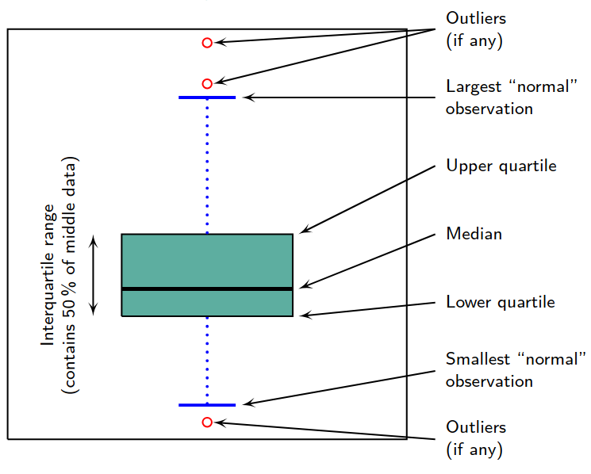
Note: The upper and lower whiskers do not have to be \(1.5 \times \text{IQR}\) in length.
# Single boxplot
set.seed(42) # Set seed for reproducibility
x <- rnorm(10) # Generate 10 random samples
boxplot(x) # Plot data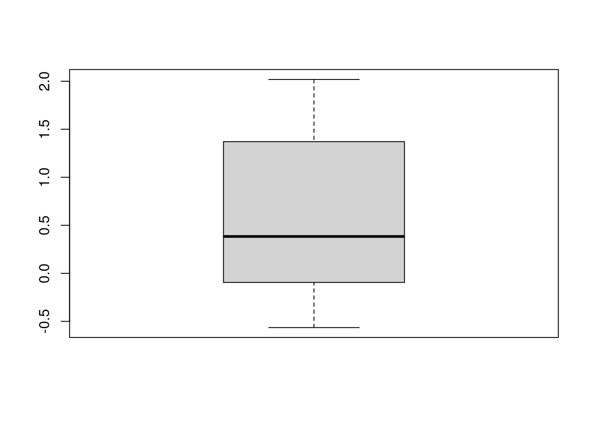
# Compare two sample groups
set.seed(42)
x <- rnorm(100)
y <- rnorm(100)
boxplot(x, y)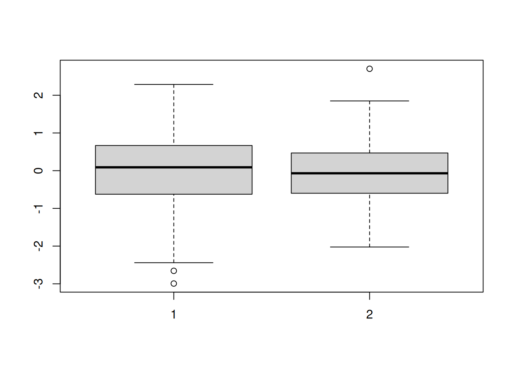
Graphical overview of occurring values. Draw a bar for each class, with the height proportional to the number of observations in that class.
# Simple histogram
set.seed(42)
x <- rnorm(1000)
hist(x)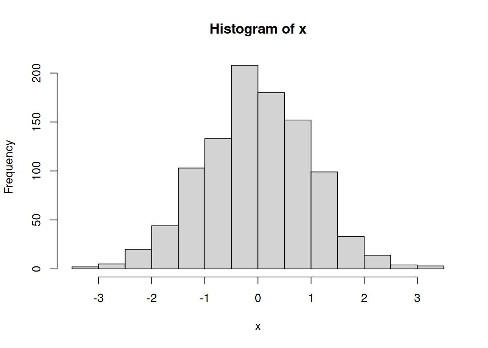
The selection of the number of classes is relevant for the interpretation of a histogram.
# Big breaks
set.seed(42)
x <- rnorm(1000)
hist(x, breaks=5)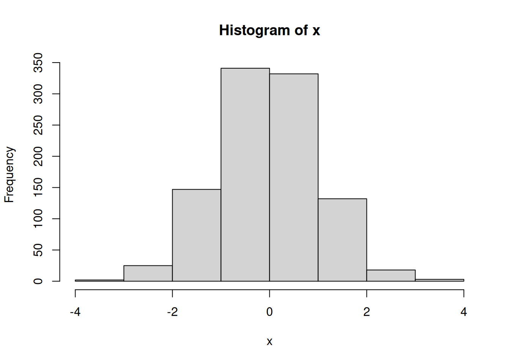
# Small breaks
set.seed(42)
x <- rnorm(1000)
hist(x, breaks=50)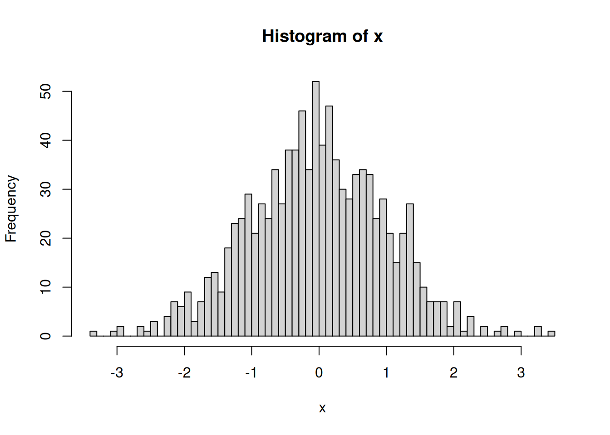
Note: Since we used
set.seed(42), both plots show the same data.
Histograms can have a skewness depending on the data.
# Right skewed data
set.seed(42)
x <- rexp(1000, rate = 1) # Using expontial distribution
hist(x, breaks=50)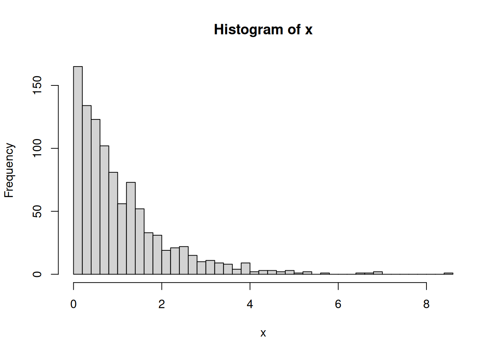
# Left left data
set.seed(42)
x <- rexp(1000, rate = 1)
x <- -x # Trun data positivity
hist(x, breaks=50)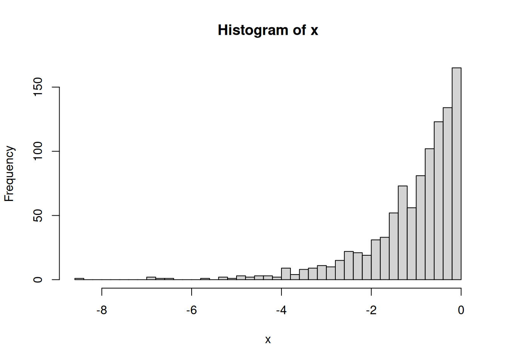
Note: The terms “right” and “left” always refer to the direction where there is less data (the tail of the distribution).
Select the bar height such that the bar area corresponds to the proportion of respective observations in the total number of observations.
Note: Density values are not percentages.
# Normalized histogram
set.seed(42)
x <- rnorm(1000)
hist(x, freq=FALSE) # Disable frequency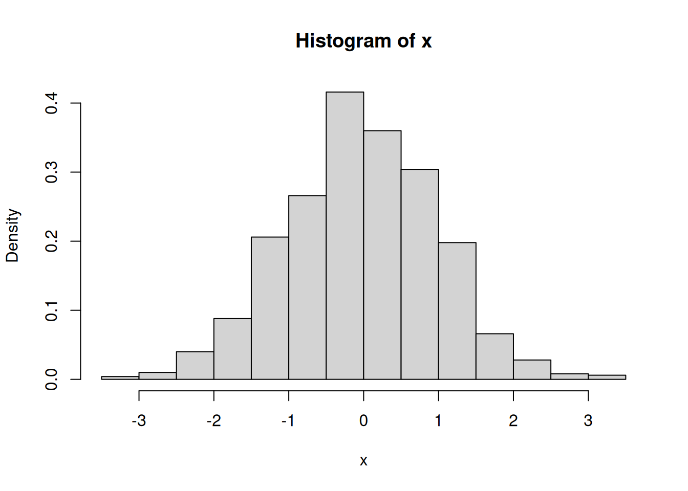
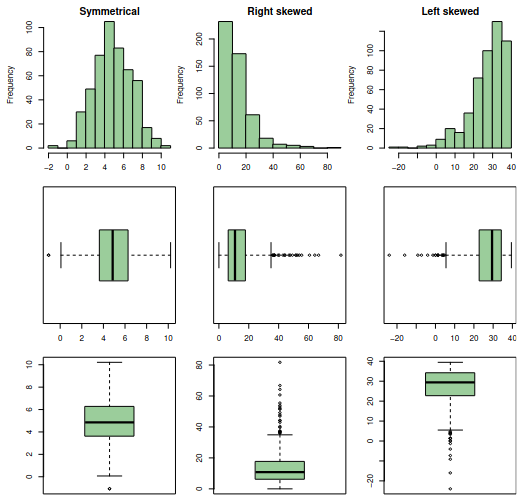
Probability models use set theory as a language. For random experiments, the outcome is not predictable. A probability model consists of events that are possible in such an experiment and probabilities for different results occurring. Probability models have the following components:
Probability formula:
\[ p(E)=\dfrac{\lvert E \rvert}{\lvert \Omega \rvert} \text{, where } E \subseteq \Omega \]
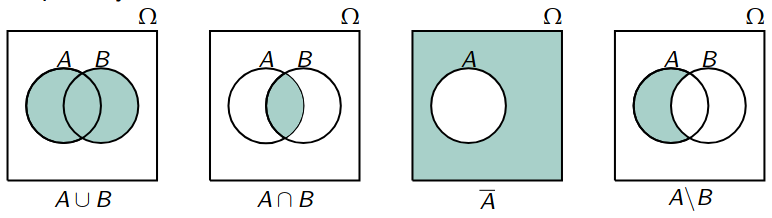
Each event \(A\) probability \(P(A)\) is assigned, with properties:
Note: Kolmogorov Axioms of Probability
If \(A, B\) and \(A_1, \dots, A_n\) events, then:
A sample space can be finite or infinite and discrete. It can also be infinite but still discrete.
The probability of event \(A = {\omega_1, \omega_2, \dots, \omega_n}\) is determined by the sum of the probabilities \(p(\omega)\) of the corresponding elementary events.
\[ p(A) = \sum_{\omega_i \in A} p(\omega_i) \]
Probabilities of all elementary elements add up to 1.
\[ p(E) = \dfrac{f}{p} = \sum_{k:\omega_i \in E} p(\omega_k) \]
Divides number of “favorable” elementary events by number of “possible” elementary events.
If events \(A\) and \(B\) are stochastically independent, then:
\[ P(A \cap B) = P(A) \cdot P(B) \]
Note: Formula applies only if events A and B are stochastically independent.
Outcome of event A has no influence on outcome of event B and vice versa.
A Random variable X is a function:
\[ \Omega \to W_X \subset \mathbb{R} \] \[ \omega \to X(\omega) \]
Random variable denoted by capital letters X (or Y, Z). Corresponding lowercase letters x (or y, z) represents specific value that random variable can take. Once \(\omega\) is chosen: \(X(\omega)\) is fixed, not random.
Note: \(x\) also called a realisation of random variable \(X\).
Values of random variable X (possible realisations of X) occur with certain probabilities that \(X\) takes value \(x\):
\[ P(X = x) = P(\{\omega \mid X(\omega) = x\}) = \sum_{\omega; X(\omega)=x} P(\omega) \]
Associated probability is determined for all realisations of random variable. List of \(P(X = x)\) for all possible values \(x_1, x_2, \dots, x_n\) is called discrete probability distribution of discrete random variable \(X\).All values of probability distribution has to sum up to 1.
\[ \sum_{\text{For all }x} P(X = x) = 1 \]
Note: For finite sample space the probability distribution is a table.
Central location of distribution. Weighted mean of all possible values, weighted by their probability of occurring.
\[ \mu = \sum_{\text{all possible } x} x \times P(X = x) \]
Note: \(E(X)\) is a theoretical value, which results from a model, i.e. distribution.
Variance is square of spread of value of random variable from expected value weighted with respective weight.
\[ \sigma = \sum_{\text{all possible } x} (x - E(X))^2 \times P(X = x) \]
Spread of distribution about \(E(X)\). Standard deviation has same unit as X.
\[ \sigma(X) = \sqrt{Var(X)} \]
Note: \(\sigma(x)\) is a theoretical value, which results from a model, i.e. distribution.
x <- 1 : 6
p <- 1 / 6
E_X <- sum(x * p)
var_X <- sum((x - E_X)^2 * p)
sd_X <- sqrt(var_X)
sd_X[1] 1.707825Note: Means: Deviation on “average” 1.7 from 3.5.
For continuous probability distributions, probabilities correspond to areas under density function. Range \(W_X\) of a random variable: Set of all values \(X\) can take. Random variable \(X\) is continuous, if its range \(W_X\) is continuous. For continuous random variable \(X\) for all \(x \in W_X\):
\[ P(X = x) = 0 \]
Note: Probability distribution of \(X\) can not be described by \(P(X = x)\).
Probability density function f(x) has the properties:
Note: Values of f(x) are not probabilities, only areas are.
For continuous distributions, the \(\alpha\) quantile \(q_\alpha\) is value where area (probability) under density function from \(-\infty\) to \(q_\alpha\) is just \(\alpha\).
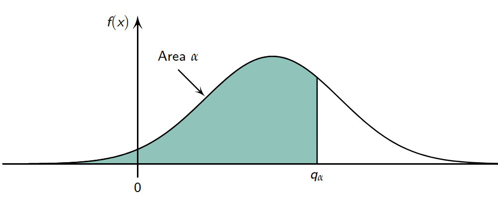
The normal distribution \(X \sim \mathcal{N}(\mu, \sigma^2)\) have the desity function:
\[ f(x) = \frac{1}{\sqrt{2\pi}\sigma} \exp\left\{ -\frac{1}{2} \left(\frac{x - \mu}{\sigma}\right)^2 \right\} \]
With the expected value \(E(X) = \mu\) and variance \(Var(X) = \sigma^2\). The parameter \(\mu\) shifts the curve horizontally from origin while \(\sigma\) defines the shape of the curve.
Calculation of IQ \(P(X \le 130)\):
# mean and sd are predefined in this task
pnorm(q = 130, mean = 100, sd = 15)[1] 0.9772499since total area under curve is 1, \(P(X \gt 130)\):
1 - pnorm(q = 130, mean = 100, sd = 15)[1] 0.02275013Determine quantiles:
qnorm(p = 0.025, mean = 100, sd = 15)[1] 70.60054qnorm(p = 0.975, mean = 100, sd = 15)[1] 129.3995The i.i.d. assumption means a set of random variables are Independent (the value of one doesn’t affect the others) and Identically Distributed (all come from the exact same probability distribution).
Note: Standard deviation of \(X_n\) is called standard error of arithmetic mean.
The Central Limit Theorem (CLT) states that, given a sufficiently large sample size (\(n\)), the distribution of the sample mean (\(\bar{X}_n\)) will be approximately normally distributed, regardless of the original population’s distribution. This is true as long as the population has a finite mean (\(\mu\)) and variance (\(\sigma^2\)). In short: For large samples, the sample mean is normally distributed.
Hypothesis testing are a important statistical tool to decide whether observations “fits” a certain parameter. Ro introduce a standardised, reproducible procedure to decide whether mean of observations does (or not) match a certain true mean \(\mu\).
Note: We can only show that this quantity does not fit to the observations with high probability.
Point estimates for expected value.
\[ \hat{\mu} = \dfrac{1}{n}\sum^n_{i=1}X_i \]
Point estimates for variance.
\[ \hat{\sigma}^2_X = \dfrac{1}{n-1}\sum^n_{i=1}(X_i - \bar{X_n})^2 \]
Note: Hat \(\hat{x}\) denotes estimate of a quantity.
Using a observation, check whether, under assumption \(\mu = x\), mean of observations is probable or not.
Null Hypothesis
\[ H_0: \mu = \mu_0 = x \]
Alternative Hypothesis
\[ H_A: \mu \ne \mu_0 = x \]
Test with this distribution whether assumption μ = x is justified. Distribution of test statistic \(T\) under the null hypothesis \(H_0\)
\[ T: \bar{X}_{10} \sim \mathcal{N}(x, \dfrac{1^2}{x}) \]
# Assume real mean of 500
pnorm(q = 499.22, mean = 500, sd = 1/sqrt(10))[1] 0.006820578It has proven practical to set this limit of what is too small and what is not at 2.5 %. So assume that given mean of \(μ_0 = 500\) is not plausible. We reject null hypothesis.
Significance level \(\alpha\), indicates how high a risk one is willing to take of making a wrong decision. For most tests \(\alpha\) value of \(0.05\) or \(0.01\). Boundary rejection range \(0.025\)- and \(0.975\)-quantiles.
qnorm(p = c(0.025, 0.975), mean = 500, sd = 1/sqrt(10))[1] 499.3802 500.6198If observed mean lies in red area of Figure, null hypothesis is rejected, also called rejection range.
p-value is probability of observing an event under null hypothesis that is at least as extreme (in direction of alternative) as currently observed event. The smaller p-value, the more result argues against null hypothesis. Values smaller than a predetermined limit, such as 5 %, 1 % or 0.1 % are reason to reject the null hypothesis.
Distribution of test statistics for t-test under null hypothesis. Similar to normal distribution, but flatter, due to greater uncertainty. Depends on number of observations. Symmetric distribution around \(0\), but flattens out slower than standard normal distribution \(\mathcal{N} (0, 1)\)
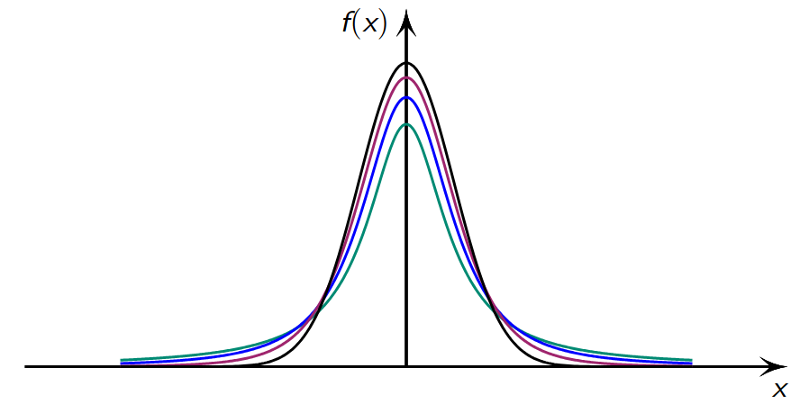
\[ H_0 = \mu =\mu_o \]
is given by
\[ T = \bar{X}_n \sim t_{n-1} \left(\mu, \frac{\hat{\sigma}_{\bar{X}}^2}{n}\right) \]
where \(t_{n−1}\) is a \(t\)-distribution with \(n − 1\) degrees of freedom.
x <- c(5.9, 3.4, 6.6, 6.3, 4.2, 2.0, 6.0, 4.8, 4.2, 2.1, 8.7, 4.4, 5.1, 2.7, 8.5, 5.8, 4.9, 5.3, 5.5, 7.9)
mean(x)[1] 5.215sd(x)[1] 1.883802t.test(x, mu = 5)
One Sample t-test
data: x
t = 0.51041, df = 19, p-value = 0.6156
alternative hypothesis: true mean is not equal to 5
95 percent confidence interval:
4.333353 6.096647
sample estimates:
mean of x
5.215 Interval indicating where, roughly speaking, true mean lies with a certain predefined probability
If \(\mu_0\) of null hypothesis does not lie within confidence interval of \(\bar{X}_n\), \(H_0\) is rejected.
Assumes less than t-test. Distribution under null hypothesis is symmetrical with respect to median \(\mu_0\).
x <- c(79.98, 80.04, 80.02, 80.04, 80.03, 80.03, 80.04, 79.97, 80.05, 80.03, 80.02, 80.00, 80.02)
wilcox.test(x, mu = 80.00, alternative = "two.sided")Warning in wilcox.test.default(x, mu = 80, alternative = "two.sided"): cannot
compute exact p-value with tiesWarning in wilcox.test.default(x, mu = 80, alternative = "two.sided"): cannot
compute exact p-value with zeroes
Wilcoxon signed rank test with continuity correction
data: x
V = 69, p-value = 0.0195
alternative hypothesis: true location is not equal to 80Wilcoxon test is in the vast majority of cases preferable to the t-test: It often has much greater power in many situations (probability of correctly rejecting the null hypothesis). Even in the most extreme cases it is never much worse.
Both observations are not independent, because same experimental unit is measured twice. Each observation of one group can be clearly assigned to an observation of the other group. Sample size is inevitably same in both groups
before <- c(25, 25, 27, 44, 30, 67, 53, 53, 52, 60, 28)
after <- c(27, 29, 37, 56, 46, 82, 57, 80, 61, 59, 43)
t.test(x = before, y = after, paired=TRUE)
Paired t-test
data: before and after
t = -4.2716, df = 10, p-value = 0.001633
alternative hypothesis: true mean difference is not equal to 0
95 percent confidence interval:
-15.63114 -4.91431
sample estimates:
mean difference
-10.27273 So-called unpaired (or independent) samples. No assignment of observations possible. Sample sizes can be differen.
If data are non-normally distributed.
x <- c(79.98, 80.04, 80.02, 80.04, 80.03, 80.03, 80.04,79.97, 80.05, 80.03, 80.02, 80.00, 80.02)
y <- c(80.02, 79.94, 79.98, 79.97, 80.03, 79.95, 79.97)
wilcox.test(x, y, alternative="two.sided", mu=0, paired=FALSE, conf.level=0.95)Warning in wilcox.test.default(x, y, alternative = "two.sided", mu = 0, :
cannot compute exact p-value with ties
Wilcoxon rank sum test with continuity correction
data: x and y
W = 76.5, p-value = 0.01454
alternative hypothesis: true location shift is not equal to 0Determine whether hypothesis test results are statistically significant. If p-value is less than significance level, reject null hypothesis and conclude that effect or relationship exists. The p-values are directly connected to null hypothesis.
p-values: Probability of observing a sample statistic that is at least as extreme as sample statistic when assuming that null hypothesis is correct
Note: p-Values Are not an Error Rate.
Can’t directly calculate error rate based on a p-value.
Two observations interpreted and displayed as coordinates of points in a coordinate system.
set.seed(42)
# Generate random data
x <- rnorm(100)
y <- rnorm(100)
plot(x, y) # By defaults Scatter Plot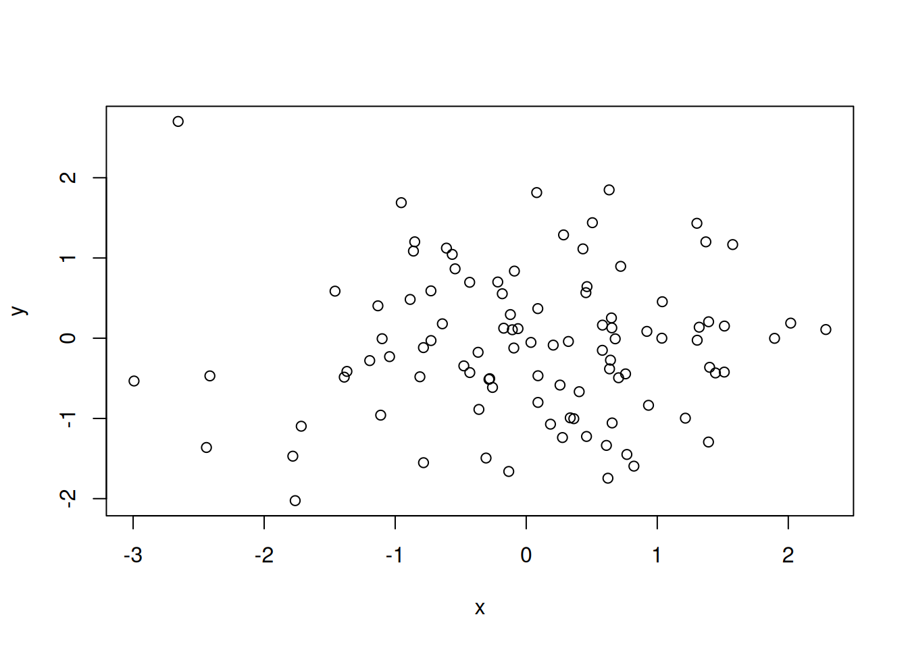
Caution regarding scatter plots: Do not confuse dependence with causality. Caution regarding scatter plots: Do not confuse dependence with causality.
\[ y = a+bx \]
\[ b=\dfrac{\Delta y}{\Delta x} \]
Formula-based relationship between book \(x\) and \(y\). The Problem is to find a line that fits all points as good as possible.
Distance between points and line.
A residual \(r_i\) is the vertical difference between a data point (\(x_i\) , \(y_i\) ) and the point (\(x_i\) , \(a + bx_i\) ) on the sought line:
\[ r_i = y_i - (a + bx_i) = y_i - a - bx_i \]
Determine a and b so that the sum of the squared residuals becomes minimal.
\[ r_1^2 + r_2^2 * \dots + r_n^2 = \sum_i r_i^2 \]
\[ \sum_{i=1}^n (y_i - (a+bx_i))^2 \]
\[ b = \frac{\sum_{i=1}^{n} (y_i - \bar{y})(x_i - \bar{x})}{\sum_{i=1}^{n} (x_i - \bar{x})^2} \]
\[ a = \bar{y} - b\bar{x} \]
Note: \(\bar{x}\) and \(\bar{y}\) are the mean values of the respective data.
set.seed(42)
# Generate random linear data
x <- rnorm(100)
y <- x * rbinom(100, size=100, prob=0.5)
plot(x, y)
abline(lm(y ~ x), col="red") # Regression line
Note: It is
lm(y~x)and notlm(x~y).
The empirical correlation is a dimensionless number between −1 and +1 and measures strength and direction of the linear dependency between the dates \(x\) and \(y\).
set.seed(42)
x <- rnorm(100)
y <- x * rbinom(100, size=100, prob=0.5)
cor(x, y) # High value because of pos linear data[1] 0.9953896Empirical correlation only measures the linear correlation.
\(R^2\)-statistics: Value between 0 and 1. It indicates to what proportion of the variability in \(Y\) is explained by \(X\) using the model. Value close to 1: A large proportion of the variability is explained by the regression. The model therefore describes the data very well.
Note: \(R^2\) can be used for any regression.
summary(lm(Sales~TV))$r.squared